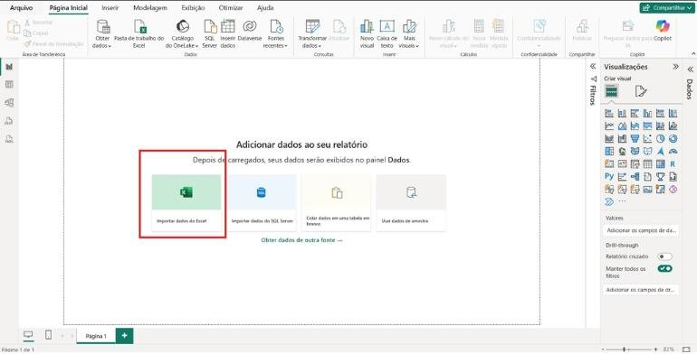
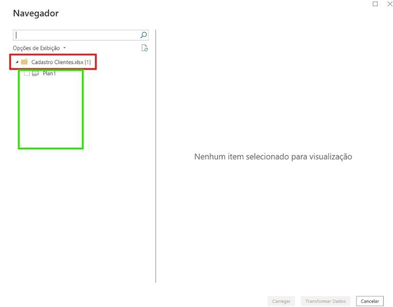
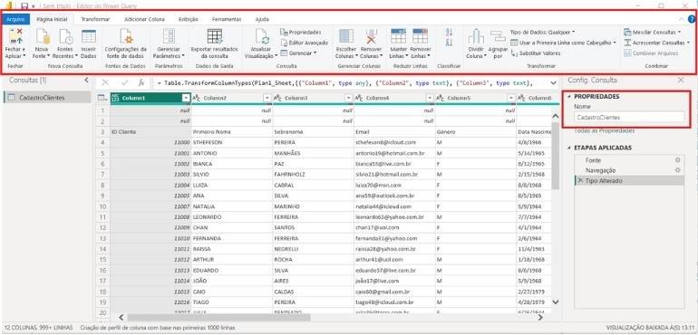
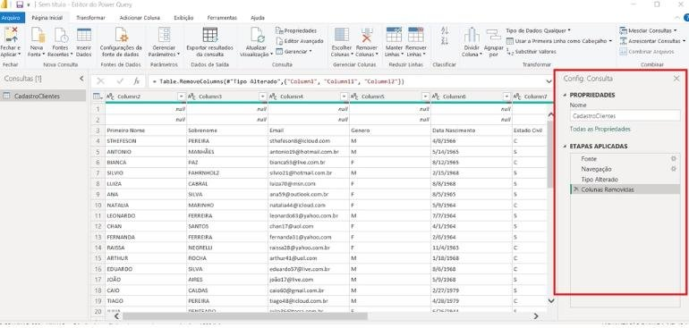
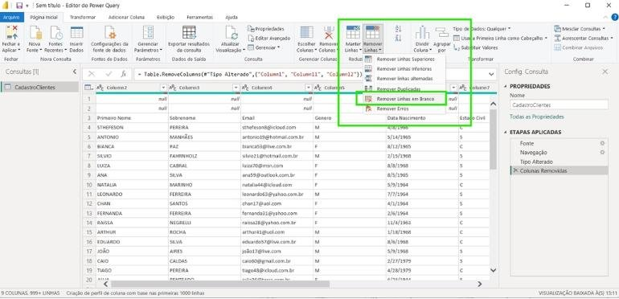
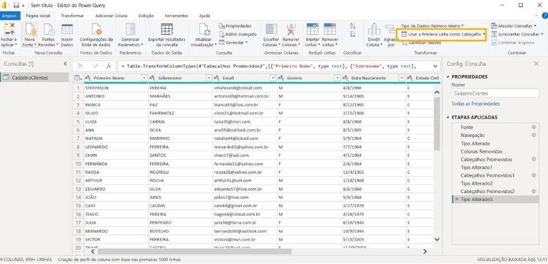
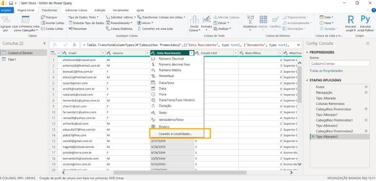
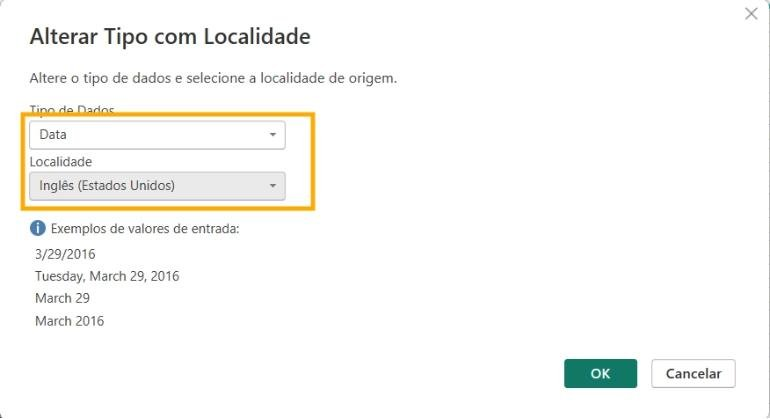

Importando do Excel e dando um banho nos dados no Power Query
Você vai importar o pacote de bases da empresa fictícia, conhecer o Editor do Power Query e fazer as primeiras limpezas: remover colunas e linhas vazias, promover cabeçalhos, acertar tipos de dados e mesclar colunas.
- Nível
- Básico
- Duração
- 3 horas
- Você vai precisar
- Power BI Desktop (gratuito, Windows)
- Conteúdos
- Obter DadosNavegadorCarregar x TransformarPower QuerynullEtapas AplicadasTipos de dadosLocalidadeQualidade da colunaMesclar colunas
01Baixando e organizando o material
Dados bem guardados evitam 90% dos erros de atualização.
Baixe o arquivo Aula_1_-_Importando_Base_de_Dados_1.zip. Ele traz as planilhas de uma empresa fictícia de varejo que você vai usar até a aula 13.
Se o link não funcionar, peça o arquivo ao professor. Ele é o mesmo usado nas aulas 2 a 6 e 9 a 13.
- Localize o ZIP em Downloads.
- Clique com o botão direito → Extrair Tudo…
- Escolha
Documentos\PowerBI_Vendas\Basese clique em Extrair.
Você terá estes arquivos. Cada planilha é uma tabela do nosso “banco de dados”:
| Arquivo | O que guarda | Tipo de tabela |
|---|---|---|
| Base Vendas - 2020, 2021, 2022 | Cada linha é um item vendido | Fato (eventos) |
| Base Devoluções | Itens devolvidos | Fato (eventos) |
| Cadastro Clientes | Quem é cada cliente | Dimensão (cadastro) |
| Cadastro Produtos | Produto, marca, categoria, preço e custo | Dimensão |
| Cadastro Lojas | Dados de cada loja | Dimensão |
| Cadastro Localidades | Cidades, estados e regiões | Dimensão |
O Power BI guarda o caminho de cada arquivo. Se você deixar as bases em Downloads e depois limpar a pasta, todas as consultas quebram. Pasta fixa = atualização sem dor de cabeça.
02Importando a primeira planilha
Abra o Power BI Desktop, clique em Relatório em branco e depois em Importar dados do Excel (ou Página Inicial → Obter dados → Excel).
Vamos começar pela planilha Cadastro Clientes: localize o arquivo na pasta Bases e clique em Abrir.

O Navegador mostra o arquivo (em vermelho) e, dentro dele, as planilhas e tabelas (em verde). Clique em Plan1 para ver a prévia.
Embaixo há dois botões que mudam tudo:
| Botão | O que faz | Quando usar |
|---|---|---|
| Carregar | Importa a planilha do jeito que está | Só quando a base já está perfeita |
| Transformar Dados | Abre o Power Query para limpar antes de carregar | Sempre, neste curso |
Clique em Transformar Dados.
Entre 70% e 80% do tempo de um analista de dados vai para limpar e preparar dados. Gráfico bonito em cima de dado sujo dá decisão errada. Por isso, dominar o Power Query é uma das habilidades mais valiosas do Power BI.

03Conhecendo o Editor do Power Query
Pense no Power Query como uma oficina: a tabela chegou suja do Excel e você vai dar um banho nela.
- Painel de Consultas (esquerda): lista as tabelas importadas. Por enquanto, só uma.
- Área de dados (centro): a tabela, com as mudanças em tempo real.
- Barra de fórmulas: mostra o código M que cada clique gera. Você não precisa escrever M agora; o Power Query escreve por você.
- Configurações da Consulta (direita): o Nome da tabela e as Etapas Aplicadas.
Repare nos problemas desta base: as duas primeiras linhas são null, as colunas se chamam Column1, Column2… e o cabeçalho real está na linha 3.

null significa que não existe valor naquela célula. Não é a palavra “null” digitada: é um valor especial que representa ausência de informação.
Aparece quando a planilha tem linhas em branco no topo, espaços vazios entre os dados, colunas sem informação ou dados incompletos.
Em Propriedades → Nome, troque Plan1 por CadastroClientes.
| Evite | Prefira |
|---|---|
| Cadastro Clientes | CadastroClientes |
| Cadastro de Produtos | CadastroProdutos |
| Vendas - 2022 | BaseVendas2022 |
Regras: sem espaços, sem acentos, sem ç, sem caracteres especiais (@ # % &) e sempre o mesmo padrão no projeto inteiro.
| Guia | Para que serve | Exemplos |
|---|---|---|
| Página Inicial | Tarefas do dia a dia | Fechar e Aplicar, Nova Fonte, Remover Colunas/Linhas, Mesclar e Acrescentar Consultas |
| Transformar | Modifica uma coluna que já existe | Tipo de dado, Substituir valores, Dividir coluna, Formatar texto, Preencher |
| Adicionar Coluna | Cria uma coluna nova sem mexer na original | Coluna personalizada, condicional, de exemplos, extrair ano/mês |
| Exibição | Controla o que aparece na tela | Barra de fórmulas, Qualidade, Distribuição e Perfil da coluna |
| Ferramentas | Recursos avançados | Diagnóstico de consultas |
Transformar altera o que existe. Adicionar Coluna cria algo novo.
04Primeiras limpezas
Cada clique vira uma etapa. Ao atualizar, o Power Query repete todas, na mesma ordem.
As colunas Column11 e Column12 estão completamente vazias. Selecione a primeira, segure Ctrl, clique na segunda e pressione Delete (ou botão direito → Remover Colunas).
Quanto menos dados inúteis, mais leve e rápido fica o relatório.
No Power Query o Ctrl+Z não é o caminho. Vá em Etapas Aplicadas e clique no X ao lado da etapa errada. Ela some e a tabela volta ao estado anterior.

Linhas não se apagam com Delete. Vá em Página Inicial → grupo Reduzir Linhas → Remover Linhas → Remover Linhas em Branco.
Numa base com milhares de linhas, pode haver linha vazia no começo, no meio e no fim. Esse comando procura todas, inclusive as que chegarem nas próximas atualizações.

Agora a primeira linha contém os nomes reais. Clique em Página Inicial → Usar a Primeira Linha como Cabeçalho.
Antes: Column1, Column2, Column3…
Depois: ID Cliente, Primeiro Nome, Sobrenome, Email, Genero, Data Nascimento…

Ao promover os cabeçalhos, o Power Query cria a etapa Tipo Alterado, tentando adivinhar o tipo de cada coluna. Ele quase sempre acerta, mas não sempre. Apague essa etapa (X) e defina os tipos você mesmo, clicando no ícone à esquerda do nome da coluna:
| Coluna | Tipo |
|---|---|
| ID Cliente | Número Inteiro |
| Primeiro Nome, Sobrenome, Email, Genero | Texto |
| Data Nascimento | Data (usando a localidade, veja o próximo passo) |
| Documento | Texto |
| Num Filhos | Número Inteiro |
Se o Power Query tratar 01234567890 como número, ele apaga o zero da esquerda e o documento vira 1234567890. Documento não se soma: é sempre Texto.

A coluna Data Nascimento vem como 4/8/1966 (mês/dia/ano, padrão americano). Se você converter direto para Data num Windows em português, o Power BI entende 4 de agosto em vez de 8 de abril, e datas como 2/27/1979 viram erro.
Clique no ícone de tipo da coluna → Usando a Localidade… → Tipo Data e Localidade Inglês (Estados Unidos) → OK.
Você está dizendo ao Power Query “este texto foi escrito por um americano”. Ele converte certo, e no relatório a data aparece no formato brasileiro.
= Table.TransformColumnTypes(#"Cabeçalhos Promovidos", {{"Data Nascimento", type date}}, "en-US")
Queremos uma única coluna NomeCliente. Como não vamos precisar das colunas separadas, usamos Transformar (que substitui) em vez de Adicionar Coluna (que duplicaria):
- Selecione
Primeiro Nome, segure Ctrl e clique emSobrenome. - Transformar → Mesclar Colunas.
- Separador: Espaço (senão vira “JOÃOSILVA”).
- Nome da nova coluna:
NomeCliente→ OK.
Depois, com NomeCliente selecionada: Transformar → Formatar → Cada Palavra em Maiúscula. “JOÃO SILVA” vira “João Silva”, muito mais agradável num relatório.
Criar uma coluna nova e depois excluir as duas antigas dá o mesmo resultado com três etapas. Mesclar direto faz em uma. Em bases com milhões de linhas, isso pesa no tempo de atualização.
Em Exibição, marque Qualidade da Coluna. Acima de cada coluna aparece uma barra:
- Verde, Válido: dados corretos para o tipo definido;
- Vermelho, Erro: valor que não conseguiu ser convertido (texto numa coluna de número, data inválida);
- Cinza, Vazio: célula sem informação.
Se aparecer erro, volte à etapa de tipo e descubra a causa. Também marque Perfil da Coluna e, no rodapé, troque para “Criação de perfil com base em todo o conjunto de dados” para avaliar a base inteira, e não só as 1.000 primeiras linhas.
Coluna com erro gera gráfico errado, indicador inconsistente e decisão ruim. Resolver aqui é muito mais fácil do que descobrir depois que o relatório já foi apresentado.
Clique em Página Inicial → Fechar e Aplicar. O Power BI executa todas as etapas e carrega a tabela limpa. Ela fica disponível nas exibições Relatório, Tabela e Modelo.
Precisa ajustar algo depois? Página Inicial → Transformar dados reabre o Power Query. O Excel original nunca é alterado.
05A consulta completa em M
Você não precisa decorar, mas ler o código ajuda a entender o que cada clique fez.
Em Página Inicial → Editor Avançado você vê todas as etapas juntas. Ajuste o caminho do arquivo para o seu computador:
let
Fonte = Excel.Workbook(File.Contents("C:\Users\SeuUsuario\Documents\PowerBI_Vendas\Bases\Cadastro Clientes.xlsx"), null, true),
Plan1_Sheet = Fonte{[Item="Plan1", Kind="Sheet"]}[Data],
#"Colunas Removidas" = Table.RemoveColumns(Plan1_Sheet, {"Column11", "Column12"}),
#"Linhas em Branco Removidas" = Table.SelectRows(#"Colunas Removidas",
each not List.IsEmpty(List.RemoveMatchingItems(Record.FieldValues(_), {"", null}))),
#"Cabeçalhos Promovidos" = Table.PromoteHeaders(#"Linhas em Branco Removidas", [PromoteAllScalars=true]),
#"Tipo Alterado" = Table.TransformColumnTypes(#"Cabeçalhos Promovidos", {
{"ID Cliente", Int64.Type}, {"Primeiro Nome", type text}, {"Sobrenome", type text},
{"Email", type text}, {"Genero", type text}, {"Documento", type text}, {"Num Filhos", Int64.Type}}),
#"Data com Localidade" = Table.TransformColumnTypes(#"Tipo Alterado", {{"Data Nascimento", type date}}, "en-US"),
#"Colunas Mescladas" = Table.CombineColumns(#"Data com Localidade", {"Primeiro Nome", "Sobrenome"},
Combiner.CombineTextByDelimiter(" ", QuoteStyle.None), "NomeCliente"),
#"Texto Formatado" = Table.TransformColumns(#"Colunas Mescladas", {{"NomeCliente", Text.Proper, type text}})
in
#"Texto Formatado"Os nomes das colunas precisam ser idênticos aos da sua planilha. Se der erro “coluna não encontrada”, confira acentos e espaços no cabeçalho do Excel.
06Importe as demais planilhas
No Power Query, use Página Inicial → Nova Fonte → Pasta de Trabalho do Excel para cada planilha. Renomeie assim:
| Arquivo | Nome da consulta | Cuidados |
|---|---|---|
| Base Vendas - 2020/2021/2022 | BaseVendas2020, BaseVendas2021, BaseVendas2022 | Data da Venda = Data; Ordem de Compra e SKU = Texto |
| Base Devoluções | BaseDevolucoes | Confira datas e quantidades |
| Cadastro Produtos | CadastroProdutos | Preço e custo vêm como texto com ponto: use Localidade Inglês (EUA) (aula 6) |
| Cadastro Lojas | CadastroLojas | IDs como Número Inteiro |
| Cadastro Localidades | CadastroLocalidades | Textos padronizados |
Ao final, clique em Fechar e Aplicar. Salve como Vendas.pbix na pasta PowerBI_Vendas.
07Atividades
A1 · Diagnóstico
BásicoPara cada planilha importada, anote: quantas linhas, quantas colunas, se tinha linhas vazias e se alguma coluna teve erro na Qualidade da Coluna.
A2 · Gênero por extenso
BásicoEm CadastroClientes, substitua M por Masculino e F por Feminino na coluna Genero (botão direito → Substituir Valores).
Cuidado
Abra Opções avançadas e marque Coincidir conteúdo da célula inteira. Sem isso, um texto como “MF” viraria “MasculinoF”.
A3 · Idade
IntermediárioUse Adicionar Coluna → Data → Idade na coluna Data Nascimento. Depois transforme a duração em anos: Transformar → Duração → Total de Anos e arredonde para baixo.
A4 · Leia o código
IntermediárioAbra o Editor Avançado de CadastroClientes e explique, com suas palavras, o que cada etapa faz.
A5 · Base suja de verdade
DesafioCrie no Excel uma planilha propositalmente bagunçada (linhas vazias, títulos na linha 4, datas americanas, CPF com zero à esquerda) e entregue para um colega limpar no Power Query.
08Resumo da aula
- No Navegador, prefira Transformar Dados a Carregar.
nullé ausência de valor.- Etapas Aplicadas são a receita da consulta; o X desfaz uma etapa.
- Documentos são Texto; datas americanas pedem Usando a Localidade.
- Transformar altera a coluna; Adicionar Coluna cria outra.
- Ative Qualidade da Coluna sempre que importar uma base nova.